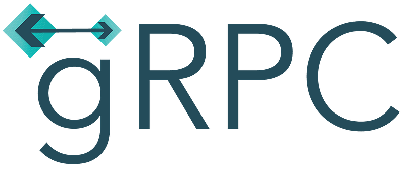
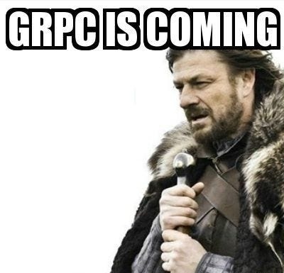
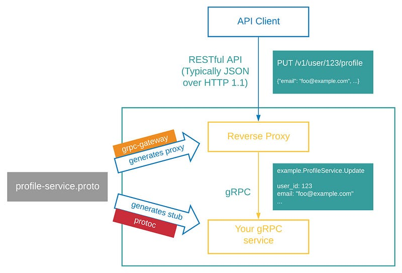

Discussion about advantages of choosing gRPC over REST based architecture

REST is architectural style which has been a de facto while designing large scale systems these days. REST idealogy disrupted the market around 15 years back replacing SOAP based architectures because of its high performance, lighter and flexible nature. Yes of course there are many more reason to it. But its been a long time while developers tried hard to struggle with few problems while using REST such as costly JSON objects, streaming back the response from server and lack of support for HTTP 2.
Why gRPC
As the world is getting more and more connected, much more data load needs to catered by our giant servers and in this, Google came up with a faster and more power efficient architectural framework for communication called gRPC.
As the name suggests, it is an extension of traditional remote procedure calls (RPC). gRPC is designed very thoughfully to overcome pain points of REST based architectures with following advantages
- gRPC is based on HTTP 2 which allows multiplexing over the network, gRPC is even superior than similar solutions like Thrift because of the above mentioned reasons
- gRPC uses serialised protocol buffers which consume less network bandwidth than JSON while data transfers. Protocol buffer’s contract definition language (proto3 as of today) is technology agnostic
- gRPC supported bidirectional streaming of data over a single RPC call. Means server can send a stream of data back to client efficiently unlike REST’s hit and get nature.
- gRPC’s implementation is time consuming as compare to REST but it is 7 times faster than REST in receiving and 10 times faster than REST in sending data.
Support for gRPC
gRPC is a relatively new approach than REST. Hence, not every technology or tool currently support gRPC but most of the do. gRPC is available with following languages as of today

Moreover gRPC APIs use their own Protoc compiler which allows you to create your own code. It works in multiple languages and can be used in polyglot environments. This refers to groups of microservices that run on separate platforms and are coded in multiple languages.
gRPC with REST
For enterprise , most of their current products and cloud solutions work fine with REST and that is a big reason for their resistance to migrate to gRPC. But there are solutions out there which allows you run gRPC with REST approach such as gRPC-Gateway.
As per definition, gRPC-Gateway is a plugin of protoc. It reads a gRPC service definition and generates a reverse-proxy server which translates a RESTful JSON API into gRPC.

All thanks to gRPC-Gateway, you can now support gRPC over your existing REST based services and enjoy benefits of both.
By the way, incase you are a fan of Microservices, you can check out this article to have a new viewpoint on it.
Conclusion
In the tech community, more we work more we tends to fall in the trap of ‘the best approach possible’ stuff while solving the problem. Even the most experience guys talks like the advocate of REST. Without getting technologically polar, I would like to conclude gRPC can be used along with REST in some cases to get maximum advantage of both.
“ gRPC’s major strength comes from the underlying HTTP 2 support which makes it 7 times faster than REST in receiving data and 10 times faster to send the data. While designing a solution which revolves around the expectations of 5 nines (99.999), 7–10x improvement is game changer. “
Growth of support and community for gRPC is in our hands as techies in the end. Hope gRPC can save a lot of I/O (s) for you in furture.